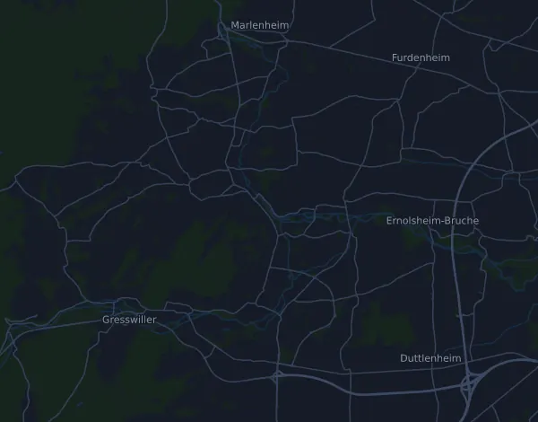

Marathon du Vignoble d'Alsace – Marathon 42.2 km
- Distance
- 42.2 km
- Elevation gain
- ↑ 408 m
- Highest point
- 236 m a.s.l.
- Surface
- Road
- Profile
- Gently rolling
- Start
- 07:45
Elevation profile
Prepare with Mila
Mila is a running coach app. Add a race to your plan and the coach plans your weeks up to race day around your form, and gives you a finish-time forecast and a plan for pacing, drinks and fuel on the course.

The right run, on the right day.
The course

About the course
Marathon du Vignoble d'Alsace – Marathon is a road race in Dorlisheim (målgång i Molsheim), France, over 42.2 km. The course climbs 408 m and descends 409 m in total, 9.7 m per km, which makes it gently rolling. The highest point is 236 m above sea level and the lowest 162 m.
The biggest climb starts at km 11.4: 67 m of ascent over 5.7 km at 1.2 % on average, up to 236 m. In total the course has 4 climbs of at least 25 m; the last one starts at km 30.6.
In the Mila app, the coach describes the course in detail in your language and plans your pacing and fueling for it.
Climbs
| Starts at | Length | Gain | Gradient | Top (m above sea level) |
|---|---|---|---|---|
| km 0.0 | 3.6 km | 30 m | 0.8 % | 207 |
| km 11.4 | 5.7 km | 67 m | 1.2 % | 236 |
| km 23.0 | 5.3 km | 54 m | 1.0 % | 234 |
| km 30.6 | 1.6 km | 39 m | 2.5 % | 228 |
Before the start
Start times
- 07:45
Source: marathon-alsace.com, retrieved 24 November 2026
Pace table
Marathon du Vignoble d'Alsace – Marathon 42.2 km in 3:00:00 – pace per km and splits
4:16 per km · km 10: 42:39 · km 21.1: 1:30:00 · km 30: 2:07:58 · km 40: 2:50:37 · finish: 3:00:00
Marathon du Vignoble d'Alsace – Marathon 42.2 km in 3:30:00 – pace per km and splits
4:59 per km · km 10: 49:46 · km 21.1: 1:45:00 · km 30: 2:29:17 · km 40: 3:19:03 · finish: 3:30:00
Marathon du Vignoble d'Alsace – Marathon 42.2 km in 4:00:00 – pace per km and splits
5:41 per km · km 10: 56:52 · km 21.1: 2:00:00 · km 30: 2:50:37 · km 40: 3:47:29 · finish: 4:00:00
Marathon du Vignoble d'Alsace – Marathon 42.2 km in 4:30:00 – pace per km and splits
6:24 per km · km 10: 1:03:59 · km 21.1: 2:15:00 · km 30: 3:11:57 · km 40: 4:15:55 · finish: 4:30:00
The times assume an even pace the whole way. This is plain arithmetic, not a forecast: on climbs, in crowds and at aid stations the pace varies.
Frequently asked questions
When is Marathon du Vignoble d'Alsace – Marathon 42.2 km?
Marathon du Vignoble d'Alsace – Marathon 42.2 km takes place on Sunday, 30 May 2027. Check the date and start time with the organizer.
What time does Marathon du Vignoble d'Alsace – Marathon 42.2 km start?
According to the organizer: 07:45.
How long is Marathon du Vignoble d'Alsace – Marathon 42.2 km and how much climbing is there?
The race is 42.2 km with 408 m of climbing and 409 m of descent. The highest point is 236 m above sea level.
What is the course of Marathon du Vignoble d'Alsace – Marathon 42.2 km like?
The course is gently rolling, with 9.7 m of climbing per km on average. It has 4 climbs of at least 25 m; the biggest starts at km 11.4: 67 m over 5.7 km. It runs from the start to a finish in another place. The surface is road.
How should I pace Marathon du Vignoble d'Alsace – Marathon 42.2 km?
Aim for an even effort rather than an even pace: let the pace drop on the climbs, win it back where it levels out, and hold back in the first kilometres. The biggest climbs start at km 0.0, km 11.4, km 23.0 and km 30.6. In Mila you get a pace plan for this course, based on your own form.
More races like this
More races nearby
- MaXi-Race – tOur du Lac en solo (1 jour) 100 km29 May 2027 · Annecy, France
- Marathon de la Liberté (D-Day Landings Marathon) 42.2 km13 June 2027 · Courseulles-sur-Mer, France
- Grand Trail du Saint Jacques - 100K 88 km19 June 2027 · Monistrol-d'Allier, France
- L'Ultra Marin – Le Grand Raid 175 km (Raid du Golfe du Morbihan)25 June 2027 · Vannes, France
- 42km du Mont-Blanc (Marathon du Mont-Blanc)27 June 2027 · Chamonix-Mont-Blanc, France
- Abalone Marathon de Nantes – Marathon 42.2 km25 April 2027 · Nantes, France
Prepare with Mila
The right run, on the right day.
Details come from the course file and the organizer's information. Check the date, start times and rules with the organizer.
Mila is not affiliated with, sponsored by or endorsed by the organizer or the race's sponsors. Names and trademarks belong to their owners. Organizer or rights holder? Ask for a change or a removal